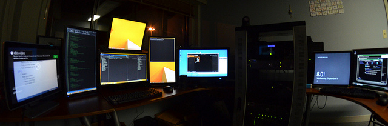

ProxMox; A VM Server For Your Home
Some months ago a friend gave me his old Hackintosh computer to work with. So I have wiped the computer clean and installed ProxMox onto it. ProxMox is a headless Linux distribution which lets you install as many operating systems as you want in the space available. It can run Windows, Mac, Linux, and other operating systems simultaneously. You can see the OSes boot in a window through your browser when on your ProxMox IP address. The full desktop is viewable right there in your browser.
There is a limitation of the desktop resolution being 1024×768 in that window. But if you set up VNC on the operating system you can boot that OS into whatever screen size works for you and simply VNC into it. Of course most server distros you’ll load onto ProxMox won’t be desktop oriented but rather command line accessible and may have headless web applications to access so the resolution size isn’t a big concern.
One awesome thing I’ve found is that it’s fairly trivial to take any VM image available online and convert it and use it within ProxMox. More on that later.
CT vs VM
CT is a container virtual machine that shares the same kernel as the ProxMox system host. It’s faster to install, start up, and more durable. During a motherboard overclock experiment I had to reset my motherboards BIOS which caused all of my VMs to be come unusable/lost (UPDATE: just a BIOS setting to change to get VM working again) but my CTs all still work. There are lots of templates available for containers to download including many popular frameworks and CMS systems. A great deal of which come from TurnKeyLinux.org. Unlike the typical Docker container or a Heroku instance these containers will persist changes. So make backups of desired states along the way.
VM images will allow you to run completely different operating systems, such as Windows or Macintosh, in a more contained environment. Windows is a simple install but Mac will take a great deal of effort. I like installing different Linux distros as VMs as well, such as Kali Linux for evaluating my own systems network security. Be sure to backup your VMs so you won’t lose them when the BIOS is reset or perhaps hard drive order gets re-arranged. I may write a post on a backup solution whenever I work out a good system for myself on this… I have some ideas. Done… see below.
Converting a Virtual Machine Image
I’m a big fan of Bitnami for getting VMs, frameworks, and full system framework installs. If you click on their “application” section you may click on any system you want to install and on the right they will have a link for VMs. Click that and at the bottom they will give you two options to download one OVA image and one VMDK. Download the VMDK, rename it to an iso extension and upload it via your ProxMox template upload page. You can then shell into your ProxMox server and locate the file at /var/lib/vz/template/iso and rename it back.
Next you’ll want to convert the vmdk file to a raw disk image with the following command
qemu-img convert -f vmdk -O raw some-bitnami-image.vmdk some-bitnami-image.rawNow you have the raw drive image for your virtual machine. Install a normal VM in ProxMox for linux and set the disk space to the same size as the raw image. Once ProxMox has finished creating it you can then go back to your shell and use the dd command to overwrite the provisioned VM drive with the raw VM image you converted earlier. The command would look something like this:
dd if=some-bitnami-image.raw of=/dev/mapper/pve-vm--107--disk--1 bs=1MBe sure to match the disk name for the VM you provisioned.
Once this is done the VM will be good to start up and you’re good to go.
Installing CT Tips
When installing a container I highly recommend you copy your public SSH key into the SSH key input. This will allow you to shell in from your main computer without needing to remember a password as your systems SSH key will verify itself. When you have a lot of VMs this makes working with them a lot quicker to get around. Also when needing to copy files securely between systems a quick scp command works with no hassle.
Adding Hard Drive Space
You can grow the size of the “drive” that you will put all of your VMs and CTs on by adding additional drives. The first thing you need to do is format the drives to the Linux LVM partition type with fdisk.
Run “fdisk -l” to get a list of the drives in the system and be sure to write down or remember the space available for the drives you are adding.
In fdisk you can press m for a menu and l will list the partition types you can format to. Find the one that says Linux LVM and remember that number (for me it’s 31). My instructions will assume the entire drive(s) you use are blank. In fdisk continue by pressing n to create a new partition. The partition number and first sector defaults are fine so just hit enter for each of them. Next you need to tell it how big you want to make the partition. You may use the full size but from a recent upgrade experience I had I would recommend leaving some space available on the end. Set the size with +455G for 455 Gigs as your size (for me I gave 10 Gigs of free space at the end) and hit enter. Finally change the partition type with t and then enter the number for Linux LVM type and hit enter. Then put w to write the changes to disk and to exit. Do this for every drive you’re going to add.
If you have four drives you’re adding the next steps will look like this:
pvcreate /dev/sdb1
pvcreate /dev/sdc1
pvcreate /dev/sdd1
pvcreate /dev/sde1
vgextend pve /dev/sdb1
vgextend pve /dev/sdc1
vgextend pve /dev/sdd1
vgextend pve /dev/sde1
lvextend pve/data /dev/sdb1
lvextend pve/data /dev/sdc1
lvextend pve/data /dev/sdd1
lvextend pve/data /dev/sde1The last line is adding the drives to the logical volume for our data. If you wanted to grow the root partition or swap you could try to swap out “pve/data” with “pve/root” or “pve/swap”.
You can look at the logical volumes with lvdisplay, physical volumes with pvdisplay, and you can do a quick scan of physical volumes with pvscan.
Creating Remote System Backup
My VM Server has plenty of room for installs but very little room for system backups. So I looked in to how I may remotely backup each of my VMs and CTs and found a tool called sshfs. So you can use ssh for a remote secure file system mount point to mount locally.
On the ProxMox system you’ll want to make sure you get these installed:
apt-get update; apt-get install sshfs fuse autofsIt’s likely your system will only have to install sshfs.
On the “other computer” where you will be backing up your files to you should create an account from which the ProxMox will ssh into.
sudo useradd -D sshfs
sudo passwd sshfs
su - sshfs
ssh-keygen -t rsaThis will get you as far as having the sshfs user and rsa keys useful for ssh‘ing in/out. Next you should run cat on your ProxMox system to get your public key.
cat .ssh/id_rsa.pub
ssh-rsa AAAAB3NzaC1yc2EAAAAXAQABAAABAQDMYwThLs/6tJTBSqw4iWzaO2XO2lmJMXsscmdxUkNTAzQFTW1E7OMR4TNz7kUTdI9rXKLsaVxiaBpK51ES7iMpbAGCjPrJPiyPhOhSTNrKBJXhxVzL7EHaD60AhbyLrNdpIgf/NqNtclogVeQCHoOxKbId8ez9Azgz1gF4/bbP8Y2+GbhCOLWtCkyDZHU7N64B4B8+J3QE688TTiv6zS0JQh1X8SMMlrlBSSLYcsUMjwpcg56qvW/snNdMTrG2AVOJ7ms15nKbcK6Vgu2TKxbjmmF14nvliCQdSyiKwlWRCVSQY9tqPZi0zEjvxZ3DnlOeQ3q/b77q4UZtyiv50A9F root@proxmoxCopy the text it spits out that looks like what I have above back to the “other computer” into a file in ~/.ssh/authorized_keys . This will allow ProxMox to ssh in as the user sshfs without needing to enter a password and making mounting a simple thing.
The last thing you will need to do on the “other computer” is create a directory where the backups will go. Make sure you do it with the sshfs user or at least change the directory’s ownership to that user. In my case I created a folder at /mnt/raid/proxmox_backup .
Now on the ProxMox system you will need to do the following. Add this line to the end of your /etc/auto.master file:
/mnt /etc/auto.sshfs --timeout=30,--ghostBe sure to leave a blank line after it. Then make a mount point where you’ll mount the remote directory.
mkdir /mnt/backupsAnd add the following line to /etc/auto.sshfs
backups -fstype=fuse,rw,nodev,nonempty,noatime,allow_other,max_read=65536,IdentityFile=/root/.ssh/id_rsa :sshfs\#sshfs@192.168.1.10\:/mnt/raid/proxmox_backupBe sure to leave a blank line after it. The first piece of the line needs to be the local backup directory. The last part :sshfs\#sshfs@192.168.1.10\:/mnt/raid/proxmox_backup is the sshfs instruction, remote username, the IP address of the “other computer”, and lastly the directory on the “other computer” to mount. The IdentityFile field is mandatory.
Then on your ProxMox system run:
/etc/init.d/autofs restart
ls /mnt/backups
df -hls will query the directory and the system will auto-mount it. The df -h command will show all mounted paths. The last one should look like:
Filesystem Size Used Avail Use% Mounted on
sshfs@192.168.1.10:/mnt/raid/proxmox_backup 1.4T 231G 1.2T 17% /mnt/backupsWoah! Do you see that? We get the size and usage of the remote drive on the system. That’s pretty cool. In my setup the raid folder is a btrfs file system which works great for me.
Now on the ProxMox web interface you need to go click on Datacenter then click on Storage then Add then Directory and give it a name SystemBackup and the directory /mnt/backups then under the drop down Content select VZDump Backup File. And there you have it! Now you can individually go to each of your VMs/CTs and backup to the “other computer”. If you’d like you may schedule backups as well.
Hardware
Depending on what you want to do may determine your hardware requirements, but this is what I recommend. Where two core CPUs is an option I would recommend a four core minimum. The more core the better. As for speed I started out with a i5-3570k Inetl Processor and the speed was acceptable, but I’ve overclocked it from 3.4GHz to about 4.3GHz (1.225 Volts) and that runs so much better!
I started out with 8GB at the system default speed of 1333MHz but found that major OS full desktop VMs like to have about 6GB of RAM so that will limit running multiple OSes. I’ve since upgraded to 16GBs of RAM running at their Profile1 setting of 1600MHz (these need to run in normal mode as setting the BIOS to turbo mode the RAM causes system failures for me). Now I can fully run the majority of major OSes on my system along with multiple Linux server CTs/VMs. It’s feels nice having these contained systems and the many options they provide.
I recommend the first drive be a SSD of around 120GB (40GB becomes the ProxMox main host and acts as your CT/VM image installer storage). Then you can add as many drives as you want to the pool of varying sizes, whatever large drives you can scrounge up.
One last tip I’ll recommend for your system is you’ll probably want a really fast NiC installed as copying large files between systems will be a frequent thing once you implement a backup system.
Summary
ProxMox is pretty fantastic with many options for configuring system startup in VMs, system CPU and memory utilization, networking defaults and firewalls, and multiple node spawning/sharing if you have more than one computer running ProxMox. It’s been a good experience as my first time trying a VM server. Although finding out specifics for drive pool addition took some digging online. It’s still well worth getting set up.
joey
October 4, 2019 - 12:02 pm
hello i want to buy a homeserver. learn how to use docker and i want to use services like nextcloud tvheadend and plex and freenas. also i want to use it as testlab for eg windows server DC and max 2 test windows clients… also linux samba .
is a intel nuc 8 i3 enough with 16 gb? or shuld i buy a deskmini with better CPU?